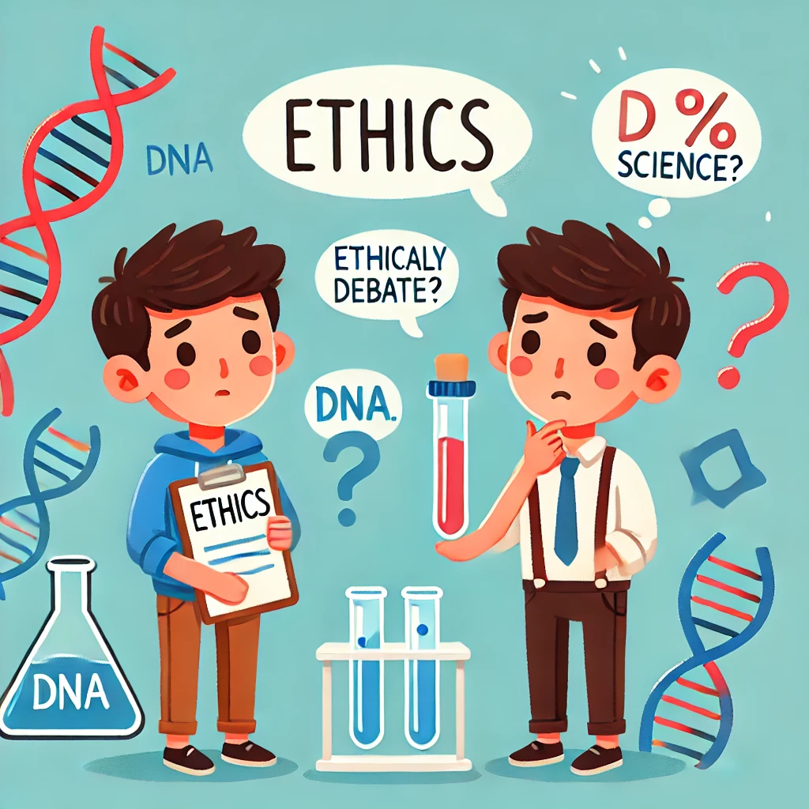

Human cloning raises numerous ethical and societal questions. One major concern is the potential loss of individuality and autonomy for cloned individuals. Clones may face discrimination and social stigma, being perceived as mere copies rather than unique individuals.
There are also concerns regarding the "naturalness" of cloning, as it bypasses traditional reproduction. Many argue that human cloning disrupts the natural order and could lead to unforeseen consequences for society. These ethical considerations are complex and continue to spark debates among scientists, ethicists, and the public.